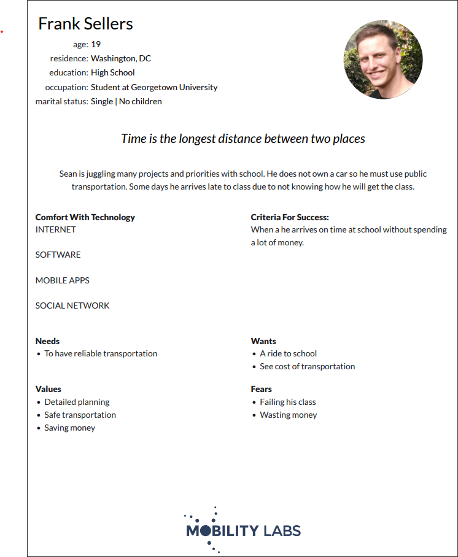
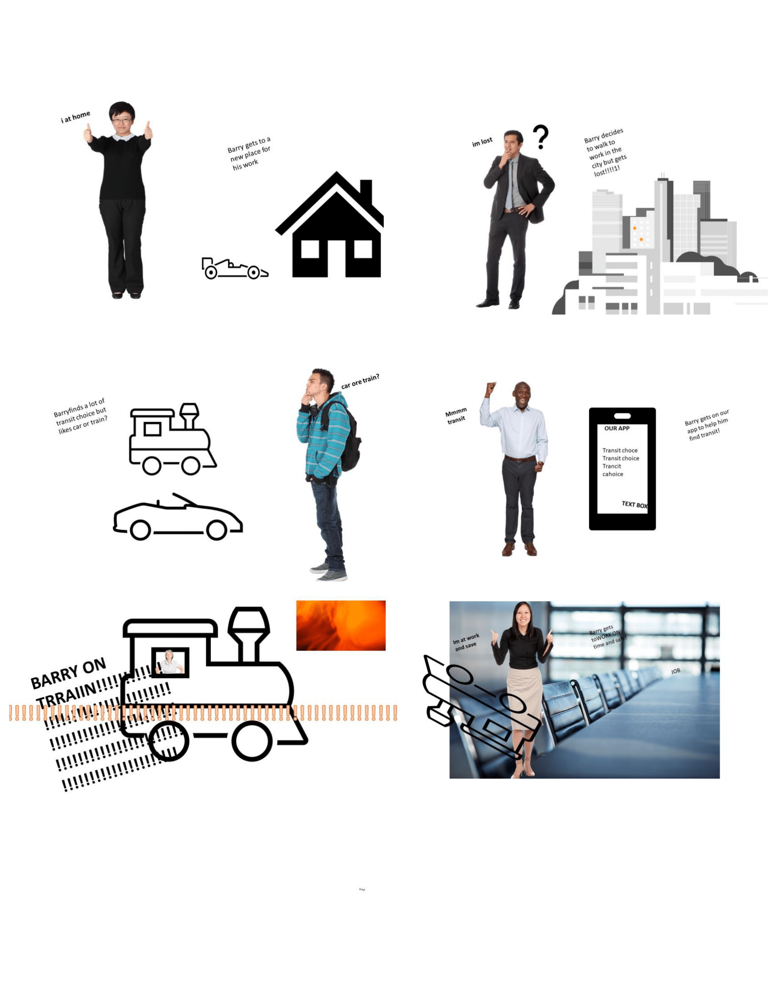
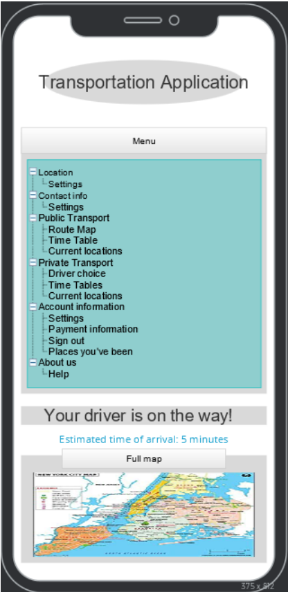

Problem Statement

Users have difficulty juggling a multitude of private transportation apps when they need transportation in a city. They feel like it would be easier to have one app that combines all private and public transportation in an area into one, easily accessible application.
Affinity Diagram

Me and my group worked to provide a clear feature list that you can expect from our app.
Persona: 2 personas for application
Our ideal consumers for our application.
Storyboard for application personas
This is the storyboard for our personas as they walk through their daily life using our application to help them.
Digital prototype
Our team worked together to bring a rough prototype of how we'd like our application to look like.
Paper prototype

Prototype walkthrough showing the possibility of how our app may function.